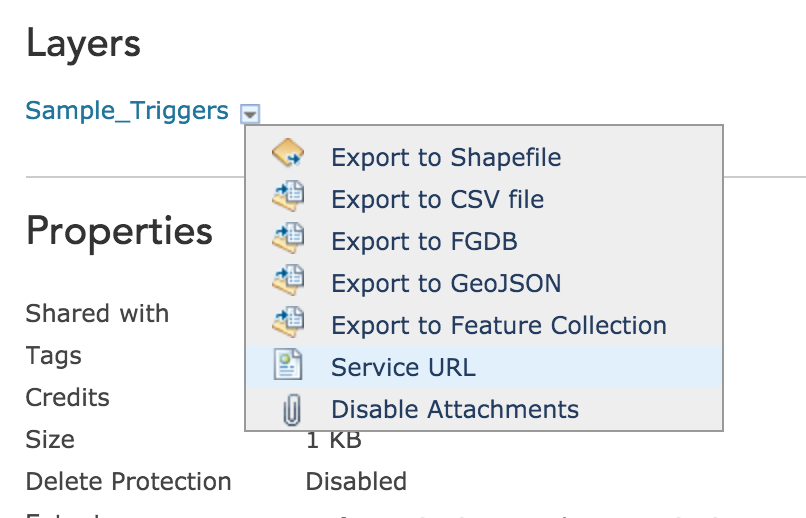

Building
Location-Aware Apps
with ArcGIS
Overview
- Using ArcGIS Online to configure notifications
- Using the ArcGIS Offline SDK to sync the messages to the device
- Using the native iOS geofencing APIs to deliver notifications
Limitations
- iOS and Android native APIs do not support polygons
- Both platforms limit the number of active regions that can be monitored at a given time
- GPS in the real world is not perfect, so be prepared for weird errors
Limited number of regions
Android's limit is 100 regions, iPhone is 20.
If your data set has more places than the limit,
you'll need to proactively register and un-register regions as the user moves around.
Let's get started
developers.arcgis.com
My Hosted Data
Create New Feature Service
Define Fields
Service is Created
Edit in ArcGIS Online

Click "Edit"

Draw polygons and set notification text
Show Item Details

Item Details
Share item with "public"

Enable Sync
Click the service URL
Feature Service
Get Feature Service Link
iOS App
Required Background Modes
Location Usage Description
Request Permission
Add Feature Service URL to App
Create GeoDatabase Task
Start Syncing GeoDatabase
Query GeoDatabase for Features
addGeofenceForFeature
Find the center of the polygon
Find the corner of the envelope
Find the distance from center to corner in meters
Create a CLRegion
Start Monitoring the CLRegion
locationManager:didEnterRegion:
called when the phone enters the region
Longer tutorial:
More than 20 regions?
What do you do if you have more than 20 regions you want to monitor?
Register only the nearest 20
- Find the user's location
- Find the nearest 20 notifications
- Register CLRegions for each
Update the nearest 20 when the user moves
- Register for "significant change" location updates
- Find the nearest 20 notifications
- Register CLRegions for each